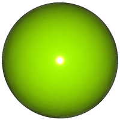
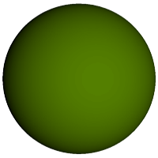
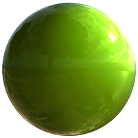
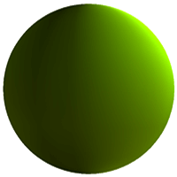
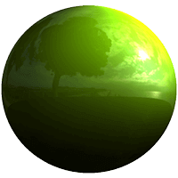
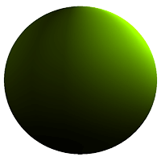
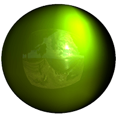
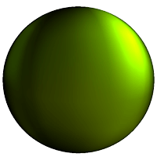

Using Image-Based Lighting
Introduction
Qt Quick 3D supports IBL (Image-Based Lighting) to illuminate scenes or individual materials.
IBL is a lighting technique that allows scenes to be illuminated with images. This is especially useful when you want to create realistic lighting and reflections in indoor and outdoor scenes.
You can use any image file for IBL, but it is recommended to use 360º HDR (High Dynamic Range) images. HDR images have a much higher dynamic range than for example JPEG or PNG images. A higher dynamic range provides more realistic lighting through a great range of luminance levels from very bright to very dark.
The following example demonstrates the lighting effect on an object using an HDR image vs a single directional light:
| Light | Reflective material | Matte material |
|---|---|---|
| Single directional light |  |  |
| Image-based light |  |  |
Scene Lighting
To illuminate a scene using an image you'll add the image as a Texture to the lightProbe property.
lightProbe: Texture {
source: "maps/OpenfootageNET_garage-1024.hdr"
}
Once you have selected an image, IBL is set up for your scene. All models in the scene are illuminated by the light probe by default.
Note: You can also combine IBL with any other light source to compliment the lighting effect on an object.
Now that you have IBL set up for your scene, let us have a look at the different properties for the probe. In many cases the default values provide a satisfying result, but you can tweak the following property values depending on the image and desired result:
- Brightness The amount of light emitted by the light probe.
- Horizon Cut-Off Increasing the value adds darkness (black) to the bottom half of the environment, forcing the lighting to come predominantly from the top of the image (and removing specific reflections from the lower half).
- Field Of View Angle The image source field of view.
- Fast Mode When this property is enabled more shortcuts are taken to approximate the light contributes of the light probe, at the expense of quality.
| Property | Reflective material | Matte material |
|---|---|---|
| Default settings | ||
| Horizon Cut-Off |  |  |
| FOV Angle |  |  |
Material Lighting
To use image-based lighting only on one material instead of a whole scene, or use a separate light probe for a model already illuminated by image-based lighting, set the image as the light probe for the material.
Once you have followed the steps above, you have a separate light probe set for the material. This light probe overrides the scene light probe if there is one specified.